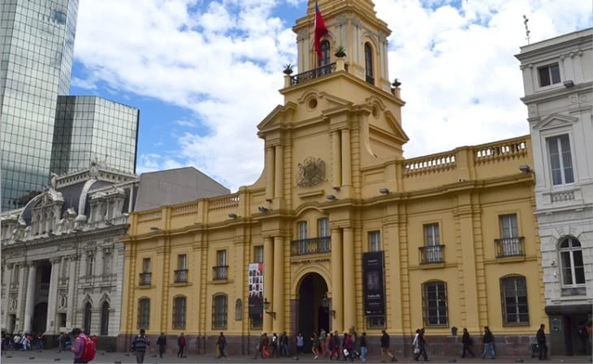
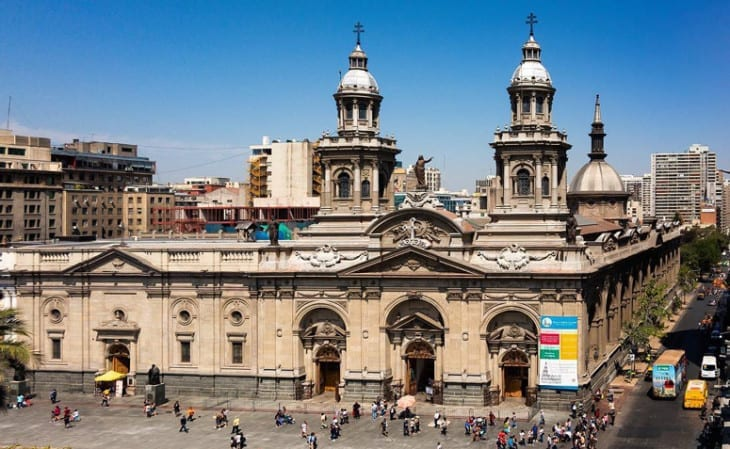

Pontos Turísticos
Santiago

Cerro Santa Lucía, localizado na região central e de onde se tem uma vista panorâmica da cidade, claro, sempre com a Cordilheira embelezando ainda mais o visual. Aqui, a subida deve ser feita a pé, mas com pequenas paradas para observar os monumentos que representam o estilo de vida da alta sociedade do século XIX.

O Museu Histórico Nacional é um passeio que não pode faltar no roteiro. As exposições estão divididas em 18 salas temáticas e cada uma conta a história de um período, que vai desde o pré-colonial até a ditadura militar. O rico acervo é composto por livros, mobiliário, artesanatos, ilustrações, pinturas, ferramentas e armas.

A Catedral Metropolitana de Santiago. Ao longo dos anos, a igreja teve que ser reconstruída cinco vezes devido a danos causados por incêndios e terremotos.
Cajon del Maipo
É um desfiladeiro localizado na porção sudeste andina da Região Metropolitana de Santiago, Chile. Ela abrange a bacia do alto rio Maipo, onde o rio se entrincheirou em um vale estreito.

Sua principal paisagem é Embalse el Yeso, um reservatório de água utilizado para o abastecimento da capital chilena. O grande lago, cercado pelo Andes, varia em tons de azul, verde e turquesa, que varia de acordo com a incidência solar.

Dependendo da estação, o turista pode pegar as montanhas branquinhas de neve ou com resquícios do inverno no cume.